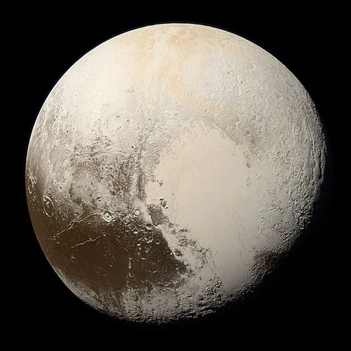

Plutão - Planeta Anão

Introdução e História
Plutão é um planeta anão localizado no Cinturão de Kuiper, uma região de objetos gelados além da órbita de Netuno. Foi descoberto em 18 de fevereiro de 1930 pelo astrônomo americano Clyde Tombaugh, que identificou o corpo após buscas por um hipotético “Planeta X”.
Até 2006, Plutão foi considerado o nono planeta do Sistema Solar, mas com a redefinição feita pela União Astronômica Internacional (IAU), ele passou a ser classificado como planeta anão devido à sua incapacidade de “limpar” sua órbita de outros objetos.
Características Físicas: Diâmetro, Massa e Órbita
Plutão tem cerca de 2.377 km de diâmetro, sendo um dos maiores planetas anões conhecidos no Sistema Solar.
Ele orbita o Sol em uma trajetória altamente elíptica e inclinada, levando cerca de 248 anos terrestres para completar uma volta.
Devido à sua distância extrema do Sol, a luz solar que Plutão recebe é muito fraca, e as temperaturas de superfície podem cair para cerca de -232 °C ou menos.
Geologia
A superfície de Plutão é marcada por uma variedade de terrenos, incluindo montanhas de gelo, vales profundos e planícies lisas, como a região conhecida como Sputnik Planum.
Essas áreas mostram sinais de atividade geológica, incluindo a possível existência de ciclos de congelamento e sublimação de nitrogênio e outros gases que moldam características superficiais ao longo de milhões de anos.
Cráteres de impacto estão espalhados pela superfície, mas algumas regiões relativamente jovens sugerem processos que renovaram partes da paisagem.
Missões Espaciais
A principal missão que visitou Plutão foi a NASA New Horizons, lançada em 2006. Em 14 de julho de 2015, ela realizou um sobrevoo histórico, coletando imagens e dados detalhados de Plutão e suas luas pela primeira vez.
Os dados da New Horizons revelaram uma atmosfera tênue de nitrogênio, metano e monóxido de carbono, bem como a diversidade de características geológicas, como planícies, montanhas e depósitos de gelo.
Atmosfera
Plutão possui uma atmosfera muito fina composta principalmente de nitrogênio, com traços de metano e monóxido de carbono que surgem quando ices sublima em sua superfície distante.
Essa atmosfera se expande quando Plutão está mais próximo do Sol e pode congelar novamente à medida que ele se afasta em sua órbita alongada.
Potencial de Habitabilidade
- Água Líquida: Não se conhece água líquida atual em Plutão, mas modelos sugerem a possibilidade de um oceano interno profundo devido ao calor residual e ao congelamento de materiais voláteis.
- Fonte de Energia: Plutão está extremamente frio e distante do Sol, portanto não há energia significativa para processos habitáveis na superfície.
- Ingredientes Químicos: A presença de gelo, nitrogênio, metano e outros compostos fornece blocos químicos básicos, mas não há evidências de química biológica ativa.
Plutão não é considerado um ambiente habitável, mas suas características complexas e possivelmente um oceano interno profundo são de grande interesse científico para estudos futuros.
Curiosidades
Plutão e sua maior lua, Caronte, estão tão próximos em tamanho e gravidade que às vezes são considerados um sistema binário.
Plutão foi o primeiro objeto do Cinturão de Kuiper a ser explorado de perto.
Sua atmosfera pode congelar e voltar à superfície conforme sua órbita excêntrica o leva mais longe ou mais perto do Sol.
Origem do Nome
Plutão recebeu esse nome em homenagem ao deus romano do submundo, equivalente a Hades na mitologia grega. O nome foi sugerido por Venetia Burney, uma garota inglesa de 11 anos, em 1930 – um dos casos mais curiosos de participação popular na nomeação de um corpo celeste.
Na mitologia, Plutão era associado ao domínio das sombras e à riqueza mineral enterrada sob a terra, simbolizando mistério e profundidade — adequada metáfora para este mundo gelado e distante na borda do nosso Sistema Solar.
Referências
- NASA. Pluto Facts – NASA Science. Disponível em: https://science.nasa.gov/dwarf-planets/pluto/facts/ . Acesso em: 26 dez. 2025.
- Encyclopaedia Britannica. Pluto. Disponível em: https://www.britannica.com/place/Pluto-dwarf-planet . Acesso em: 26 dez. 2025.
- NASA. New Horizons. Disponível em: https://science.nasa.gov/mission/new-horizons/ . Acesso em: 26 dez. 2025.